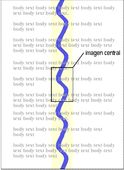

Contenidos
Las propiedades de CSS permiten a los autores especificar el color de fondo y el aspecto del fondo de un elemento. Los fondos pueden ser colores o imágenes. Las propiedades del fondo permiten a los autores ubicar una imagen de fondo, repetirla y declarar si debe quedar fija con respecto al acceso visual o desplazada junto con el documento.
Ver la sección sobre unidades de color por la sintaxis de los valores de color válidos.
Esta propiedad describe el color del primer plano del contenido de texto de un elemento. Existen distintas maneras de especificar rojo:
EM { color: red } /* nombre de color predefinido */
EM { color: rgb(255,0,0) } /* RGB rango 0-255 */
Los autores pueden especificar el fondo de un elemento (es decir, su superficie de procesamiento) ya sea como un color o como una imagen. En términos del modelo de caja, "background" se refiere al fondo del contenido y las áreas de relleno (padding). El color y estilo del borde se ponen con las propiedades del borde. Los márgenes son siempre transparentes de modo que el fondo de la caja padre siempre se ve a través.
Las propiedades del fondo no se heredan, pero el fondo de la caja padre por defecto se verá a través debido al valor inicial 'transparent' para 'background-color'.
El fondo de una caja generada por el elemento raíz cubre todo el lienzo.
Para los documentos en HTML, sin embargo, recomendamos que los autores especifiquen el fondo del elemento BODY en vez del elemento HTML. Las aplicaciones del usuario deben observar las siguientes reglas de precedencia para llenar el fondo: si el valor de la propiedad 'background' del elemento HTML es distinto a 'transparent' entonces se lo usa, de otro modo se usa el valor de la propiedad 'background' del elemento BODY. Si el valor resultante es 'transparent', el procesamiento es indefinido.
De acuerdo con estas reglas, el lienzo subyacente del siguiente documento HTML tendrá un fondo "mármol".
<!DOCTYPE HTML PUBLIC "-//W3C//DTD HTML 4.0//EN">
<HTML>
<HEAD>
<TITLE>Poniendo el fondo del lienzo</TITLE>
<STYLE type="text/css">
BODY { background: url("http://style.com/mármol.png") }
</STYLE>
</HEAD>
<BODY>
<P>Mi fondo es de mármol.
</BODY>
</HTML>
| Valor: | <color> | transparent | inherit |
| Inicial: | transparent |
| Se aplica a: | todos los elementos |
| Se hereda: | no |
| Porcentajes: | N/A |
| Medios: | visuales |
Esta propiedad determina del color de fondo de un elemento, ya sea un valor de <color> o la palabra clave 'transparent', para hacer que los colores subyacentes se vean a través.
H1 { background-color: #F00 }
| Valor: | <uri> | none | inherit |
| Inicial: | none |
| Se aplica a: | todos los elementos |
| Se hereda: | no |
| Porcentajes: | N/A |
| Medios: | visuales |
Esta propiedad determina la imagen de fondo de un elemento. Cuando ponen una imagen de fondo, los autores deben también especificar un color de fondo que será usado cuando la imagen no esté disponible. Cuando la imagen está disponible, es procesada encima del color de fondo. (Así, el color es visible a través de las zonas transparentes de la imagen.)
Los valores para esta propiedad son un <uri>, para especificar la imagen, o 'none', cuando no se utiliza ninguna imagen.
BODY { background-image: url("mármol.gif") }
P { background-image: none }
| Valor: | repeat | repeat-x | repeat-y | no-repeat | inherit |
| Inicial: | repeat |
| Se aplica a: | todos los elementos |
| Se hereda: | no |
| Porcentajes: | N/A |
| Medios: | visuales |
Si se especifica una imagen de fondo, esta propiedad especifica si la imagen es repetida (mosaico), y de qué modo. Un mosaico completo cubre las áreas de contenido y relleno de una caja. Los valores tienen los siguientes significados:
BODY {
background: white url("pendiente.gif");
background-repeat: repeat-y;
background-position: center;
}
 [D]
Una copia de la imagen está centrada, y otras copias están colocadas por encima y por debajo de la misma para formar una banda vertical por detrás del elemento.
| Valor: | scroll | fixed | inherit |
| Inicial: | scroll |
| Se aplica a: | todos los elementos |
| Se hereda: | no |
| Porcentajes: | N/A |
| Medios: | visuales |
Si se especifica una imagen de fondo, esta propiedad especifica si es fija con respecto al acceso visual ('fixed') o se desplaza junto con el documento ('scroll').
Incluso cuando la imagen sea fija, sólo será visible cuando esté en el fondo o el área de relleno del elemento. De este modo, a menos que la imagen forme un mosaico ('background-repeat: repeat'), puede ser invisible.
Este ejemplo crea una banda vertical infinita que permanece "pegada" al acceso visual cuando el elemento es desplazado.
BODY {
background: red url("pendiente.gif");
background-repeat: repeat-y;
background-attachment: fixed;
}
Las aplicaciones del usuario pueden tratar 'fixed' como 'scroll'. Sin embargo, se recomienda que interpreten 'fixed' correctamente, la menos para los elementos HTML y BODY, porque no hay un modo de que el autor proporcione una imagen exclusivamente para aquellos navegadores que soportan 'fixed'. Ver la sección sobre conformidad para más detalles.
| Valor: | [ [<porcentaje> | <medida> ]{1,2} | [ [top | center | bottom] || [left | center | right] ] ] | inherit |
| Inicial: | 0% 0% |
| Se aplica a: | los elementos reemplazados y a nivel de bloque |
| Se hereda: | no |
| Porcentajes: | referidos al tamaño de la propia caja |
| Medios: | visuales |
Si se ha especificado una imagen de fondo, esta propiedad especifica su posición inicial. Los valores tienen los siguientes significados:
Si solamente se da un valor de porcentaje o de medida, éste determina sólo la posición horizontal, la posición vertical será 50%. Si se dan dos valores, la posición horizontal viene primero. La combinación de valores de medida y de porcentajes está permitida (ej., '50% 2cm'). Las posiciones negativas están permitidas. Las palabras clave no pueden ser combinadas con valores de porcentaje o de medida (todas las combinaciones posibles están dadas arriba).
BODY { background: url("banner.jpeg") right top } /* 100% 0% */
BODY { background: url("banner.jpeg") top center } /* 50% 0% */
BODY { background: url("banner.jpeg") center } /* 50% 50% */
BODY { background: url("banner.jpeg") bottom } /* 50% 100% */
Si la imagen de fondo está fija en el acceso visual (ver la propiedad ), la imagen es ubicada en relación al acceso visual en vez del área de relleno del elemento. Por ejemplo,
BODY {
background-image: url("logo.png");
background-attachment: fixed;
background-position: 100% 100%;
background-repeat: no-repeat;
}
En el ejemplo de arriba, la (única) imagen es ubicada en la esquina inferior derecha del acceso visual.
| Valor: | [<'background-color'> || <'background-image'> || <'background-repeat'> || || <'background-position'>] | inherit |
| Inicial: | no definido para las propiedades resumidas |
| Se aplica a: | todos los elementos |
| Se hereda: | no |
| Porcentajes: | permitidos en 'background-position' |
| Medios: | visuales |
La propiedad 'background' es una propiedad resumida para fijar la propiedades individuales del fondo (es decir, 'background-color', 'background-image', 'background-repeat', y 'background-position') en un mismo lugar en la hoja de estilo.
La propiedad 'background' primero coloca a todas las propiedades individuales del fondo en sus valores iniciales, luego asigna los valores explícitamente dados en la declaración.
En la primer regla del ejemplo siguiente, sólo un valor para 'background-color' ha sido fijado y las otras propiedades individuales son puestas con sus valores iniciales. En la segunda regla, todas las propiedades individuales han sido especificadas.
BODY { background: red }
P { background: url("chess.png") gray 50% repeat fixed }
Para información acerca del tema de la gama, por favor consulte la Guía de gama en la especificación PNG ([PNG10]).
En el cómputo de la corrección de gama, las AU visualizadas en un CRT pueden asumir un CRT ideal e ignorar cualquier efecto de gama aparente provocado por el dithering. Esto significa que el tratamiento mínimo que necesita hacer en la plataforma actual es:
"Aplicar una gama" significa que cada uno de los tres R, G y B deben ser convertidos a R'=Rgama, G'=Ggama, B'=Bgama, antes de ser entregado al SO.
Esto puede efectuarse rápidamente construyendo una paleta de 256 elementos una vez por cada llamada al navegador, así:
for i := 0 to 255 do raw := i / 255.0; corr := pow (raw, gamma); table[i] := trunc (0.5 + corr * 255.0) end
lo que entonces evita cualquier necesidad de efectuar cálculos complicados por atributo de color, mucho menos por pixel.
|
Copyright © 1998 W3C (MIT, INRIA, Keio ), All Rights Reserved.
Traducción: Carlos Benavidez |